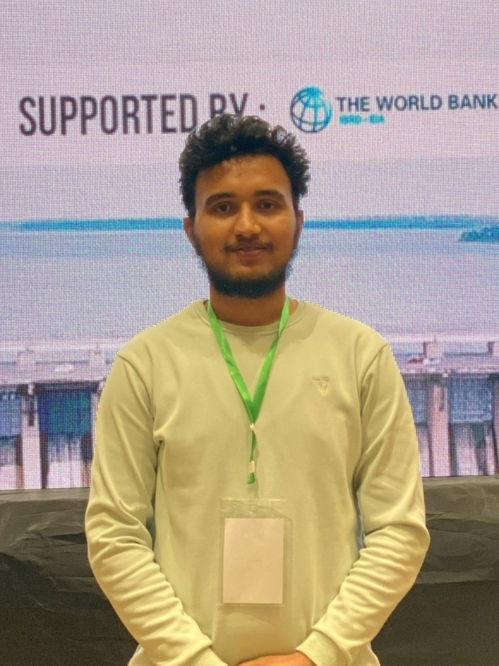

Welcome
Hi, I am a Civil Engineer (NEC Registered) with interests on different types of infrastructure, their resilience, and connectivity. At present, I am contributing to the digitization in the AEC industry, serving as the GIS Expert in the largest potable water supply distribution project of Nepal. When I'm not working, I love to explore GIS, BIM, programming, and IoT, as I see their potential on transforming the way we operate in the AEC industry. From Spatial Analysis to Computer Vision, I have interests in newer and efficient methods of data collection, data management, data analysis, and help in decision making for infrastructure works.

Infrastructure Overview
Total Projects
31
By Category
- Transportation14
- Energy5
- Water Infrastructure7
- Rural Development3
- Tourism2
By Province
- Bagmati8
- Gandaki3
- Multiple Provinces12
- Madhesh4
- Others4
By Status
- Ongoing18
- Completed4
- Planning phase6
- Halted1
- Unknown2